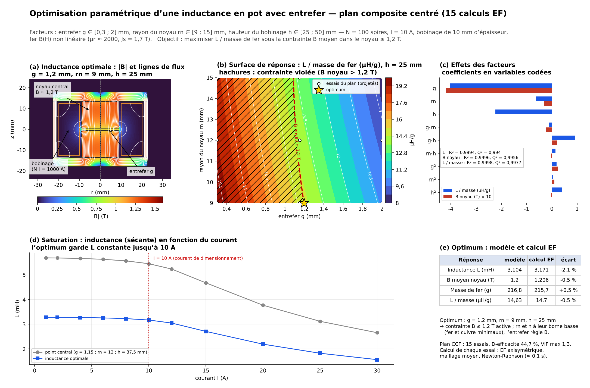

1 Facteurs
2 SolveurCalcul de chaque essai EF, maillage moyen EF, maillage grossier MEC 50 × 50 MEC 30 × 30
Fer B(H) non linéaire Linéaire µr = 2000
Pot fermé : noyau central de rayon rn (entrefer g au centre), bobinage de rᵢ = rn + 1 mm à rₑ = rᵢ + e, hauteur h, cylindre extérieur et flasques de même section que le noyau.
3 Plan d’expériencesType de plan
Factoriel complet 2^k Factoriel fractionnaire 2^(k−p) Plackett-Burman (12 essais) Composite centré à faces centrées (CCF) Composite centré rotatable (CCC) Composite centré inscrit (CCI) Box-Behnken Factoriel complet 3^k Hypercube latin (maximin) D-optimal I-optimal
Fraction
Nombre d’essais
Modèle visé Quadratique Interactions Linéaire
Points au centre
Générer le plan Comparer les plans
Rappels sur les plans
2^k, fractionnaires, Plackett-Burman : 2 niveaux, orthogonaux ; estiment les effets principaux (et interactions selon la résolution). Criblage.Composites centrés : 2^k + 2k points axiaux (±α) + centre. CCF : α = 1 (reste dans le domaine) ; CCC : α = n_f^¼ (rotatable, sort du domaine) ; CCI : CCC réduit pour que les axiaux soient aux bornes.Box-Behnken : 3 niveaux, aucun essai aux sommets du domaine.Hypercube latin : n niveaux par facteur, répartition uniforme (maximin) ; utile pour métamodèles.D-optimal : maximise det(XᵀX) (précision des coefficients) ; I-optimal : minimise la variance moyenne de prédiction sur le domaine. Échange de Fedorov sur une grille 3^k.Les calculs étant déterministes, répéter le centre n’apporte pas d’information : 1 point au centre suffit (utile pour détecter une courbure).
Plan d’expériences Lancer les simulations Arrêter Exporter CSV
Choisissez les facteurs et le type de plan, puis « Générer le plan ».
Modèle de régression
Réponse
Modèle Linéaire Linéaire + interactions Quadratique (surface de réponse)
Lancez les simulations pour ajuster un modèle.
Coefficients (variables codées dans [−1, 1]) — barres pleines : |t| > 2
Valeurs prédites par le modèle en fonction des valeurs simulées
Équation du modèle
Surface de réponse
Axe horizontal Axe vertical
Exemple de résultats sur l’inductance
Scénario par défaut, calculé par éléments finis : plan composite centré (15 essais) sur l’entrefer g, le rayon du noyau rn et la hauteur du bobinage h, à I = 10 A ;
maximiser L / masse de fer sous B noyau ≤ 1,2 T. (a) champ à l’optimum, (b) surface de réponse et contrainte, (c) effets des facteurs, (d) saturation L(I), (e) vérification de l’optimum.
